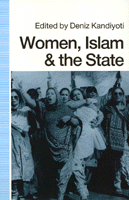

<body bgcolor="#FFFFFF" text="#000000" link="#0000FF" vlink="#CC0000" alink="#CC0000"><center><hr width="350" size="1" align="center" noshade>Examines the relationship between Islam, the nature of state projects, and the position of women in the modern nation states of the Middle East and South Asia<hr width="350" size="1" align="center" noshade><p><a href="https://cdcshoppingcart.uchicago.edu/Cart/ChicagoBook.aspx?ISBN=9780877227854&&PRESS=temple" target="_top">Buy this book!</a> | <a href="https://cdcshoppingcart.uchicago.edu/Cart/Cart.aspx?PRESS=temple" target="_top">View Cart</a> | <a href="https://cdcshoppingcart.uchicago.edu/Cart/Cart.aspx?PRESS=temple" target="_top">Check Out</a></p><p></p></center><!--none//--><h1>Women, Islam and the State</h1>
<h3>edited by Deniz Kandiyoti</h3>
<P>cloth 0-87722-785-3 $54.95, May 91, <FONT COLOR=#990033>Out of Stock Unavailable</FONT>
<br>paper 0-87722-786-1 $33.95, May 91, <FONT COLOR=#990033>Available</FONT>
<BR> 256 pp
<BR>&nbsp;<br>Restricted: Please note that sales of this book are restricted to the United States of America and its dependencies, and Canada.
</P><BLOCKQUOTE><I>"The most significant theoretical advance in Muslim-world women's studies for years."</I>
<br>&#151<b><I>Voice Literary Supplement</I></b><I></I></BLOCKQUOTE>
<p>This collection of original essays examines the relationship between Islam, the nature of state projects, and the position of women in the modern nation states of the Middle East and South Asia. Arguing that Islam is not uniform across Muslim societies and that women�s roles in these societies cannot be understood simply by looking at texts and laws. the contributors focus, instead, on the effects of the political projects of states on the lives of women.
<BR>&nbsp;<h2>Excerpt</h2><P>Excerpt available at <a href="http://www.temple.edu/tempress">www.temple.edu/tempress</a></p>
<BR>&nbsp;<h2>Contents</h2><P>
<p>Acknowledgments
<br>Notes on Contributors
<br>1. Introduction &#150 Deniz Kandiyoti
<br>2. End of Empire: Islam, Nationalism and Women in Turkey &#150 Deniz Kandiyoti
<br>3. Hazards of Modernity and Morality: Women, State and Ideology in Contemporary Iran &#150 Afsaneh Najmabadi
<br>4. The Convenience of Subservience: Women and the State of Pakistan &#150 Ayesha Jalal
<br>5. The Quest for National Identity: Women, Islam, and the State in Bangladesh &#150 Naila Kubeer
<br>6. Forced Identities: The State, Communalism, Fundamentalism and Women in India &#150 Amritu Cbbacbbi
<br>7. Elite Strategies for State Building: Women, Family, Religion and the State in Iraq and Lebanon &#150 Suad Joseph
<br>8. Competing Agendas: Feminists, Islam and the State in 19th and 20th Century Egypt &#150 Margot Badran
<br>9. The Law, the State and Socialist Policies With Regard to Women: The Case of the People�s Democratic Republic of Yemen &#150 Maxine Molyneux
<br>Index
</P><BR>&nbsp;<H2>About the Author(s)</H2>
<P><b>Deniz Kandiyoti</b> was formerly a member of the Social Science Departments of the Middle East Technical University in Ankara and Bogazici University in Istanbul, and she served as chairperson of the research committee on women and society of the International Sociology Association from 1982 to 1986. She currently resides in England.</P>
<P>Contributors: Margot Badran, Amrita Chhachhi, Ayesha Jalal, Suad Joseph, Naila Kabeer, Maxine Molyneux, Afsaneh Najmabadi, and the editor.</P>
<BR><H2>Subject Categories</H2>
<p><A HREF="/tempress/women.html" TARGET="_top">Women's Studies</a>
<BR><A HREF="/tempress/sociology.html" TARGET="_top">Sociology</a>
</p>
<BR><h2 class="inpageheading">In the series</H2>
<P><I><a href="http://www.temple.edu/tempress/women_political.html" onMouseOver="window.status='Click for other books in this series!'; return true;" onMouseOut="window.status=''; return true;" target="_top">Women in the Political Economy</a></i>, edited by Ronnie J. Steinberg.
</p><p>No longer active.<p><i>Women in the Political Economy</i>, edited by Ronnie J. Steinberg, includes books on women and issues of work, family, social movements, politics, feminism, and empowerment. It emphasizes women's roles in society and the social construction of gender and also explores current policy issues like comparable worth, international development, job training, and parental leave.</p>
<p align="center"><a href="https://cdcshoppingcart.uchicago.edu/Cart/ChicagoBook.aspx?ISBN=9780877227854&&PRESS=temple" target="_top">Buy this book!</a> | <a href="https://cdcshoppingcart.uchicago.edu/Cart/Cart.aspx?PRESS=temple" target="_top">View Cart</a> | <a href="https://cdcshoppingcart.uchicago.edu/Cart/Cart.aspx?PRESS=temple" target="_top">Check Out</a></p><p><font face="Arial" size="1"><a href="copyright.html" onMouseOver="window.status='Web Copyright Policy';return true;" onMouseOut="window.status=''" title="Web Copyright Policy">&copy;</a> 2015 <a href="http://www.temple.edu" target="new" onMouseOver="window.status='Link to Temple University home page';return true;" onMouseOut="window.status=''" title="Link to Temple University home page">Temple University</a>. All Rights Reserved. http://www.temple.edu/tempress/titles/805_reg.html</font></p>